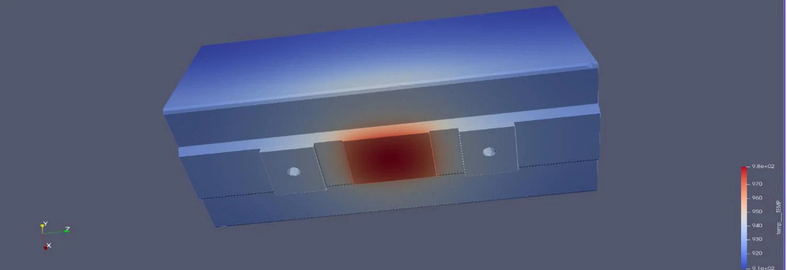
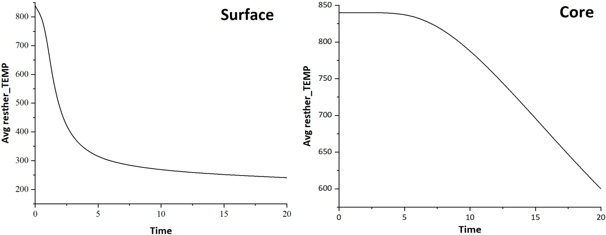

Academic team project
Thermal Simulation of Heat Sink and Quenching Process
Two thermal simulations covering steady heat dissipation in an aluminium heat sink and transient cooling of a steel gear.
- Software
- Salome-Meca
- Period
- September 2024 to January 2025
Introduction
The team studied how heat spreads across a finned aluminium heat sink and how a gear cools during quenching. The first analysis looked at the steady temperature field. The second tracked how the field changed over time.
Method
Heat sink
We built and meshed the geometry in Salome-Meca and applied a prescribed heat flux and convection boundary conditions.
Gear quenching
We modelled a gear made of American Iron and Steel Institute (AISI) 4140 steel starting at 840 °C. The two cases used oil at 120 °C and water at 25 °C with temperature-dependent thermal inputs.
My contribution
I contributed to the modelling, analysis and report for both cases with my teammates.

Results
In the steady-state model, the heat sink was hottest near the prescribed heat input and cooler towards the fins. In the oil-quench model, the gear surface cooled first and the core showed a delayed response.
The quench simulations describe temperatures over time. Quantifying hardness or residual stress would require material transformation and mechanical analyses.



